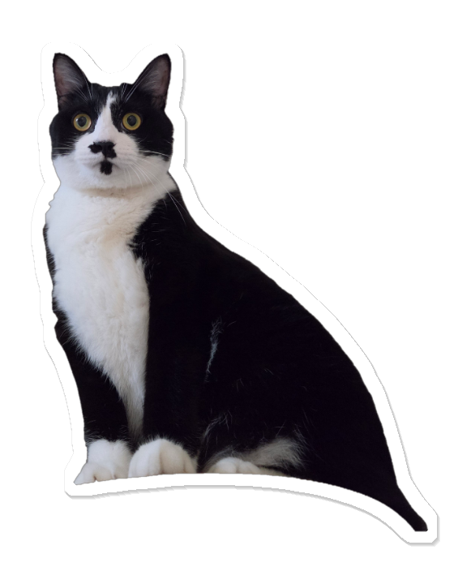
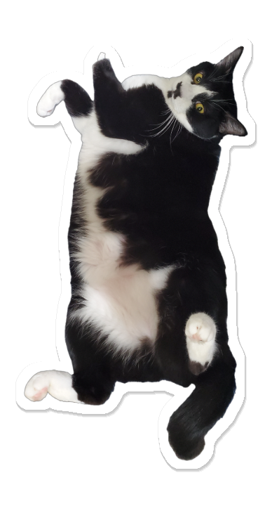

ARCHIVE ISSUE NO. 02 ｜ 赤峰街當代探店
紅玥緬因貓藝廊
RED MOON CAT GALLERY
隱身於台北當代文創聚落赤峰街巷弄。以純白法式拱門、通透鏡面與低矮席地座席，打造人與巨型溫和長毛「緬因貓」平視相伴的藝廊空間。
所屬行政區 / 捷運
台北市大同區 ｜ 雙連站 1 號出口 (4分)
基本消費制
每人餐飲低消 400 元 + 10% 服務費
繁忙時段時間限制
限時 90 分鐘（席位有限）
工作與筆電友善度
⭐⭐☆☆☆ (2/5) 席地低桌，不適辦公
📐 預算約束與時間模型 (KaTeX Rendered)：
$$\text{最低基本支出 } C_{\min} = 400 \times (1 + 10\%) = 440 \text{ NTD} \quad \Big|\quad \text{用餐停留時數 } T \le 90 \text{ min}$$

01 / THE FELINES
店貓陣容與平視互動
紅玥最為人稱道的核心特點，是店內常駐超過十隻體態碩大、毛髮細密鬆軟的「緬因貓（Maine Coon）」，同時亦能偶遇布偶貓、德文捲毛貓與長毛金漸層。
🐾 低矮席地的平視視界
全店捨棄高腳餐椅，改採臥榻與地毯席地而坐。當龐大如小豹一般的緬因貓輕巧邁過身旁時，視線恰好能與牠們溫柔的眼眸平視，撫摸感毫無距離。
☁️ 挑高獨立高空貓走廊
牆面上方設計了連通拱門的立體木質貓道。需要私隱或午睡的貓咪可以隨時返回挑高走道俯瞰全場，給予動物最充分的自主放鬆空間。
02 / THE SPACE
法式純白與藝廊質地
店內融合當代藝廊策展理念，牆面點綴貓咪主題的藝術繪畫與極具設計感的大型拱門穿透鏡，明亮通透的日光灑落於白牆地毯上，純淨無寵物雜味。
換鞋消毒嚴謹
入店前需更換潔淨室內拖鞋並確實雙手消毒，維護地毯與貓咪行走衛生。
文創藝術結合
不定期展示原創貓咪插畫藝術，營造出寧靜悠緩的日雜生活感觀空間。
03 / GOURMET
義式正餐與甜點精選
打破一般貓咖僅有簡單小點的限制，紅玥提供現點現做的義大利麵食與精緻甜點，可作為悠閒下午茶或正餐首選。
04 / VISIT GUIDE
造訪守則與交通指南
- 店家地址 台北市大同區赤峰街 71 巷 4 號 1 樓
- 鄰近捷運 捷運淡水信義線「雙連站」1 號出口，步行約 3~5 分鐘
- 訂位提醒 因席地座位數量有限，強烈建議造訪前務必提前預約席次
🐾 愛護店貓互動守則
1. 觸摸貓咪請輕柔順毛撫摸，禁止強行抱貓或拉扯尾巴。2. 全場拍照請務必**關閉相機與手機閃光燈**，避免驚嚇貓咪眼部。
3. 請共同維護店內寧靜交談音量，讓貓咪能在放鬆無壓力的環境中生活。